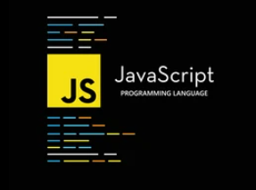
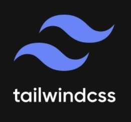
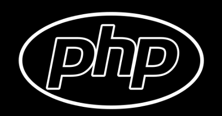
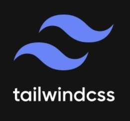
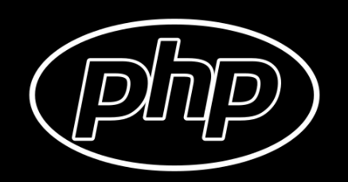

Normalmente, com ênfase no front-end, realizamos serviços na WEB (VENDA DE SITES, PLATAFORMAS PARA CRM, LANDING PAGE etc.). Usamos ferramentas primitivas de computação e uma mistura de engenharia social. Usamos as melhores técnicas de invasão e pesquisa de informações e possíveis criminosos.
Nossas ferramentas e linguagens favoritas são:
 



Usamos JAVA para criar aplicativos móveis e web, JAVASCRIPT para adicionar interatividade aos nossos sites e VSCODE - WEB para editar nossos códigos. Também usamos DEV TOOLS para depurar nossos códigos e HY SPY para capturar dados de usuários.
Hoje, o meu time atua no mercado de soluções de e-commerce, CEO e Hacking há mais ou menos 6 anos. Com toda essa experiência, tanto prática quanto didática, abriu portas para mim e meus amigos em várias empresas no mundo Digital. E, caso tenha interesse em participar do nosso time, é só ficar esperto no Instagram da loja.
Usando apenas servidores validados e com canal e fluxos continuos a criptografados.
A agência de web design PK Digital Products, liderada por Pablo Kennedy, conhecido pelo apelido de Nike, cria arquivos escritos em HTML, CSS e JavaScript em forma de documento.
Nike começou a trabalha no arquivo no bloco de notas e usar ferramentas de Desenvolvimentos para acelerar todo o processo, onde ele cria a estrutura básica da página. Em seguida, ele adicionou o conteúdo e o estilo, utilizando as linguagens HTML e CSS. O arquivo normalmente é finalizado e publicado no GitHub e aguarda o cliente adquirir o codigo fonte e assim subir para um dominio dedicado.
Detalhando como funciona o processo de criação do nosso time.
O arquivo HTML é responsável pela estrutura da página, incluindo o cabeçalho, o corpo e o rodapé. O arquivo CSS é responsável pelo estilo da página, incluindo a fonte, a cor, o tamanho e a posição dos elementos.
A PK Digital Products é uma agência de web design especializada em desenvolvimento de sites, sistemas e aplicativos.
A empresa tem mais de 6 anos de experiência no mercado e atende clientes em todo o Brasil.
Sobre o autor
Pablo Kennedy é um desenvolvedor web com mais de 10 anos de experiência. Ele é especialista em HTML, CSS, JavaScript, PHP e MySQL. Ele também é um apaixonado por tecnologia e está sempre atualizado sobre as últimas tendências.
Nike é um homem dedicado ao seu trabalho e aos seus clientes. Ele sempre busca a excelência e está sempre disposto a ajudar seus clientes a alcançar seus objetivos.
Eu entrei nesse mundo através do Minecraft, hahaha!
Acredite, eu amava trocar as roupinhas (skins) dos personagens e adicionar funções que normalmente não estão visíveis para os usuários. Foi com essa minha mania de ficar codificando e decifrando vários tipos de códigos em jogos que eu gostava que me inspirei a estudar todos esses anos por prazer, visando sempre a eficiência e o equilíbrio entre a razão e os sonhos. Isso me deu uma nova visão de como funciona o mundo como um todo.
Aqui, minha função é desenvolver ambientes digitais que têm como foco conectar pessoas do mundo todo.
Eu simplesmente não sei dizer o quanto amo a área de programação, inovação e revolução da tecnologia.
Nela, estou sempre aprendendo mais e mais a cada dia que passa. Não importa o quanto eu estude, sempre haverá mais a se descobrir sobre este mundo misterioso e maravilhoso que é a internet.
Atualmente, é algo que faço por amor, com força de vontade e sem fins lucrativos. Sinto que isso é parte de mim.
Existe um Pablo de antes e depois da programação. Isso é fato, mas há algo diferente. Quando eu tenho insônia, escrevo código. Quando estou feliz, escrevo código. Quando alguma coisa está desabando e tudo dá errado, escrevo código para melhorar. E quando está tudo bem, fico o dia inteiro escrevendo código... haha, chega a ser engraçado.
Quando vi que estava nesse nível de dedicação por vontade própria, resolvi investir e tirar o máximo de proveito disso.
Isso não é um hobby, isso não é um simples trabalho involuntário. Isso é a junção de tudo o que sou.
Isso é parte de mim.
Isso é PK Digital Products.
- Nike
- Desenvolvedor de Software
- Uberlândia,MG Brasil.
História do sistema operacional Android
A história do sistema operacional Android começa em 2003, quando Andy Rubin, Rich Miner, Nick Sears e Chris White fundaram a Android Inc., uma empresa de software com sede em Palo Alto, Califórnia. A empresa foi adquirida pelo Google em 2005 por US$ 50 milhões.
O objetivo da Android Inc. era desenvolver um sistema operacional para dispositivos móveis que fosse aberto e flexível, permitindo que os fabricantes de dispositivos e desenvolvedores de aplicativos personalizassem o sistema de acordo com suas necessidades.
O primeiro lançamento do Android foi em 2008, com o lançamento do HTC Dream, o primeiro smartphone com o sistema operacional. O Android rapidamente se tornou popular, e hoje é o sistema operacional mais usado em smartphones em todo o mundo.
A evolução do Android ao longo dos anos pode ser dividida em quatro principais fases:
Fase 1 (2008-2010): A primeira fase do Android foi marcada pelo lançamento das primeiras versões do sistema operacional, como o Android 1.0, Android 1.1 e Android 1.5 Cupcake. Nessa fase, o Android ainda estava em desenvolvimento, e o foco era criar um sistema operacional básico e funcional.
Fase 2 (2010-2013): A segunda fase do Android foi marcada pelo lançamento das versões Android 2.0 Froyo, Android 2.2 Froyo e Android 2.3 Gingerbread. Nessa fase, o Android ganhou novos recursos e funcionalidades, como suporte a telas maiores, multitarefa e câmera frontal.
A história do sistema operacional Android começa em 2003, quando Andy Rubin, Rich Miner, Nick Sears e Chris White fundaram a Android Inc., uma empresa de software com sede em Palo Alto, Califórnia. A empresa foi adquirida pelo Google em 2005 por US$ 50 milhões. O objetivo da Android Inc. era desenvolver um sistema operacional para dispositivos móveis que fosse aberto e flexível, permitindo que os fabricantes de dispositivos e desenvolvedores de aplicativos personalizassem o sistema de acordo com suas necessidades. O primeiro lançamento do Android foi em 2008, com o lançamento do HTC Dream, o primeiro smartphone com o sistema operacional. O Android rapidamente se tornou popular, e hoje é o sistema operacional mais usado em smartphones em todo o mundo. A evolução do Android ao longo dos anos pode ser dividida em quatro principais fases: Fase 1 (2008-2010): A primeira fase do Android foi marcada pelo lançamento das primeiras versões do sistema operacional, como o Android 1.0, Android 1.1 e Android 1.5 Cupcake. Nessa fase, o Android ainda estava em desenvolvimento, e o foco era criar um sistema operacional básico e funcional. Fase 2 (2010-2013): A segunda fase do Android foi marcada pelo lançamento das versões Android 2.0 Froyo, Android 2.2 Froyo e Android 2.3 Gingerbread. Nessa fase, o Android ganhou novos recursos e funcionalidades, como suporte a telas maiores, multitarefa e câmera frontal. Fase 3 (2013-2016): A terceira fase do Android foi marcada pelo lançamento das versões Android 4.0 Ice Cream Sandwich, Android 4.1 Jelly Bean, Android 4.4 KitKat e Android 5.0 Lollipop. Nessa fase, o Android ganhou um novo visual, baseado no Material Design, e novos recursos, como suporte a NFC, assistente virtual e tela de bloqueio personalizável.
Fase 4 (2016-presente): A quarta fase do Android está em andamento, e é marcada pelo lançamento das versões Android 6.0 Marshmallow, Android 7.0 Nougat, Android 8.0 Oreo, Android 9.0 Pie, Android 10, Android 11, Android 12 e Android 13. Nessa fase, o Android continua a ganhar novos recursos e funcionalidades, como suporte a inteligência artificial, privacidade aprimorada e segurança aprimorada.
O Android é um sistema operacional que continua a se desenvolver e a crescer. Com o lançamento de novas versões e recursos, o Android se torna cada vez mais poderoso e versátil, tornando-se a escolha preferida de milhões de usuários em todo o mundo.
Alguns dos principais recursos e funcionalidades do Android incluem:
Sistema operacional aberto e flexível: O Android é um sistema operacional de código aberto, o que significa que qualquer pessoa pode usar, modificar ou redistribuir o código-fonte. Essa flexibilidade permite que os fabricantes de dispositivos e desenvolvedores de aplicativos personalizem o sistema de acordo com suas necessidades.
Suporte a uma ampla gama de dispositivos: O Android é compatível com uma ampla gama de dispositivos, desde smartphones e tablets até TVs e carros. Essa flexibilidade permite que o Android seja usado em uma variedade de contextos.
Ecossistema de aplicativos robusto: O Android tem um ecossistema de aplicativos robusto, com milhões de aplicativos disponíveis na Google Play Store. Essa variedade de aplicativos permite que os usuários encontrem o que precisam para produtividade, entretenimento e muito mais.
Suporte a recursos avançados: O Android suporta uma variedade de recursos avançados, como suporte a multitarefa, câmera frontal, NFC, assistente virtual e tela de bloqueio personalizável. Esses recursos tornam o Android um sistema operacional poderoso e versátil.
Aqui eu troxe um projeto que criei do zero, é apenas um esboço.
Aqui nessa epoca o professor era o Gustavo Guanabara, eu particularmente dou nota 10 e indico sempre pros meus amigos.
ultilizei a minha logica e tentei obter o mesmo resultado proposto no curso visando limpar o codigo e dexar ele mais leve mas isso com minha logica e meu codidos.
É mais um demontração, não se apega no site se não. hahah
história da Netflix
Esse é um projeto que eu fiz com a intenção de apenas testar minha habilidades, tentei fazer igualzinho o original para aperfeiçor tecnicas.
Aah relaxa viu lá não guarda nenhuma informação, mas serve para tu usar de base e ter uma noção de qual nivél estou, aqui tu pode ver a qualidade do meu trabalho.
A história da Netflix começa em 1997, quando Marc Randolph e Reed Hastings fundaram a empresa em Scotts Valley, Califórnia. A ideia inicial era estabelecer um serviço de aluguel de DVD online, um conceito que ainda estava em seus estágios iniciais na época. Randolph, um especialista em marketing, e Hastings, um engenheiro de software, reconheceram o potencial da internet para revolucionar a forma como as pessoas consumiam filmes e séries de televisão.
Os primeiros anos da Netflix foram marcados por um foco na inovação e na satisfação do cliente. A empresa introduziu um modelo de assinatura única com taxa fixa, permitindo que os membros alugassem DVDs ilimitados por uma taxa mensal. Isso eliminou a necessidade de multas por atraso e simplificou o processo de aluguel, tornando-o mais conveniente para os consumidores. Além disso, a Netflix implementou um sofisticado sistema de recomendação que sugeria filmes e séries de televisão com base nas preferências individuais, aprimorando a experiência geral do usuário.
Em 2000, a Netflix alcançou um marco significativo ao ultrapassar 200.000 assinantes, demonstrando a crescente popularidade de seu serviço de aluguel de DVD. A empresa continuou a expandir suas ofertas, adicionando mais DVDs ao seu catálogo e introduzindo novos recursos, como gerenciamento de fila online e recomendações personalizadas.
À medida que a tecnologia da internet avançou, a Netflix reconheceu o potencial da mídia de streaming. Em 2007, a empresa lançou seu serviço de streaming, permitindo que os assinantes assistissem filmes e séries de televisão instantaneamente pela internet. Isso marcou um momento crucial na história da Netflix, pois ela passou de uma empresa tradicional de aluguel de DVD para uma pioneira na indústria de entretenimento digital.
A introdução do streaming provou ser uma mudança de jogo para a Netflix. A conveniência e a flexibilidade de assistir a conteúdo sob demanda, combinadas com a vasta biblioteca de filmes e séries de televisão da Netflix, atraiu milhões de novos assinantes. O crescimento da empresa acelerou rapidamente, e em 2010, ela havia ultrapassado 10 milhões de assinantes nos Estados Unidos.
A história da Netflix começa em 1997, quando Marc Randolph e Reed Hastings fundaram a empresa em Scotts Valley, Califórnia. A ideia inicial era estabelecer um serviço de aluguel de DVD online, um conceito que ainda estava em seus estágios iniciais na época. Randolph, um especialista em marketing, e Hastings, um engenheiro de software, reconheceram o potencial da internet para revolucionar a forma como as pessoas consumiam filmes e séries de televisão. Os primeiros anos da Netflix foram marcados por um foco na inovação e na satisfação do cliente. A empresa introduziu um modelo de assinatura única com taxa fixa, permitindo que os membros alugassem DVDs ilimitados por uma taxa mensal. Isso eliminou a necessidade de multas por atraso e simplificou o processo de aluguel, tornando-o mais conveniente para os consumidores. Além disso, a Netflix implementou um sofisticado sistema de recomendação que sugeria filmes e séries de televisão com base nas preferências individuais, aprimorando a experiência geral do usuário. Em 2000, a Netflix alcançou um marco significativo ao ultrapassar 200.000 assinantes, demonstrando a crescente popularidade de seu serviço de aluguel de DVD. A empresa continuou a expandir suas ofertas, adicionando mais DVDs ao seu catálogo e introduzindo novos recursos, como gerenciamento de fila online e recomendações personalizadas. À medida que a tecnologia da internet avançou, a Netflix reconheceu o potencial da mídia de streaming. Em 2007, a empresa lançou seu serviço de streaming, permitindo que os assinantes assistissem filmes e séries de televisão instantaneamente pela internet. Isso marcou um momento crucial na história da Netflix, pois ela passou de uma empresa tradicional de aluguel de DVD para uma pioneira na indústria de entretenimento digital. A introdução do streaming provou ser uma mudança de jogo para a Netflix. A conveniência e a flexibilidade de assistir a conteúdo sob demanda, combinadas com a vasta biblioteca de filmes e séries de televisão da Netflix, atraiu milhões de novos assinantes. O crescimento da empresa acelerou rapidamente, e em 2010, ela havia ultrapassado 10 milhões de assinantes nos Estados Unidos. O sucesso da Netflix não foi sem seus desafios. A empresa enfrentou a concorrência de empresas de mídia estabelecidas, como a Blockbuster e a HBO, bem como o aumento dos custos de conteúdo e as complexidades de gerenciar um serviço de streaming global. No entanto, a Netflix permaneceu comprometida com sua visão de fornecer uma experiência de entretenimento perfeita e personalizada, e seu foco na inovação e na satisfação do cliente permitiu que ela superasse esses obstáculos.
Em 2013, a Netflix tomou uma decisão estratégica de focar inteiramente no streaming, descontinuando seu serviço de aluguel de DVD. Essa mudança foi um passo ousado, mas acabou se provando a decisão certa para a empresa. O streaming tornou-se a forma dominante de consumo de entretenimento, e a Netflix se posicionou como o principal provedor de serviços de streaming.
Hoje, a Netflix opera em mais de 190 países e tem mais de 220 milhões de assinantes em todo o mundo. Oferece uma vasta biblioteca de filmes, séries de televisão, documentários e programação original, atendendo a uma ampla gama de gostos e preferências. A empresa continua a investir pesadamente na criação de conteúdo, produzindo programas originais premiados que receberam elogios da crítica e sucesso popular.
A jornada da Netflix de uma pequena empresa de aluguel de DVD para um gigante do entretenimento global é um testemunho de seu espírito inovador, seu compromisso inabalável com a satisfação do cliente e sua capacidade de se adaptar ao cenário em constante mudança da indústria de mídia digital. À medida que a tecnologia continua a evoluir e as expectativas dos consumidores mudam, a Netflix está preparada para permanecer na vanguarda da indústria do entretenimento, moldando a forma como as pessoas consomem e experimentam histórias nos próximos anos.
- Modelo de assinatura única com taxa fixa para aluguel de DVD
- Sistema de recomendação sofisticado
- Introdução do serviço de streaming
- Mudança para o modelo apenas de streaming
- Expansão global
- Investimento em programação original
Marcos e inovações importantes:
No geral, a história da Netflix é marcada pela inovação, pela satisfação do cliente e pela capacidade de se adaptar ao cenário em constante mudança da indústria de mídia digital. A empresa se transformou de uma pequena empresa de aluguel de DVD em um gigante do entretenimento global, e continua a moldar a forma como as pessoas consomem e experimentam histórias.
história do Twitter
Eu conclui que toda sabedoria é valida mas nem toda sabedoria me convém.
Não quero ir para a parte de gravar dados ainda mas essa parte existe e o golpe funciona exatamente assim oh, pessoal mal intencionadas usando sites parecedidos para tirar seu dinheiro... Por favor denuncia aqui pra gente achar eles e quem sabe devolver o dinheiros das pessoas que foram lezadas, o foco é front-end no momento.
Lá não salva nenhuma informação e também tem alguns detelhes que eu tive a intenção de não corrigir por preguiça mesmo mas provavelmente eu fiquei com agonia e arrumei.
Não tem fins lucrativos e serve apenas como um teste de capacidade.
PRÉSTA ATENÇÃO, DÁ PRA DESCOBRIR QUE É FALSO SÓ DE OLHAR O LINK.
Enfim,dá para descobrir que é falso, mas isso por que eu quis mostrar pra você o que é possivel fazer hoje usando um simples compultador de mesa antigo.
Amo desenvolvimento por conta disso.
São tantas formas de se trabalhar, moldar, receber e transmitir com as informações hoje em dia, aprender isso é questão de esforço.
A história do Twitter remonta a 2006, quando Jack Dorsey, Evan Williams e Biz Stone colaboraram para criar uma plataforma de microblogging que permitisse às pessoas compartilhar breves pensamentos e atualizações com seus seguidores. O nome original do serviço era "twttr", sem vogais, mas foi posteriormente alterado para Twitter.
Em março de 2006, Dorsey postou o primeiro tweet, "just setting up my twttr", marcando o início oficial da plataforma. O Twitter rapidamente ganhou popularidade, alcançando 1 milhão de usuários registrados em apenas seis meses.
Em 2007, o Twitter introduziu dois recursos fundamentais: a integração com SMS e o hashtag. A integração com SMS permitia aos usuários enviar tweets diretamente de seus celulares, ampliando o alcance da plataforma. Já o hashtag, representado pelo símbolo "#", facilitava a descoberta e organização de tópicos específicos.
Em 2008, o Twitter ultrapassou 10 milhões de usuários registrados e se tornou uma ferramenta essencial para a cobertura de eventos de última hora, como a eleição presidencial dos Estados Unidos. No ano seguinte, a plataforma introduziu o botão de retweet, permitindo aos usuários compartilhar tweets de outros usuários com seus próprios seguidores.
A década de 2010 marcou a consolidação do Twitter como uma plataforma de comunicação global. Em 2010, o Twitter foi utilizado para transmitir ao vivo a cerimônia do Oscar, atingindo 50 milhões de usuários registrados. Em 2011, a plataforma desempenhou um papel crucial na cobertura das revoltas da Primavera Árabe, alcançando 100 milhões de usuários registrados.
Em 2012, o Twitter introduziu o recurso de "tweets promovidos", permitindo que empresas e organizações pagassem para que seus tweets aparecessem de forma mais destacada na plataforma. No mesmo ano, a empresa adquiriu o Vine, um aplicativo de vídeos curtos.
Em 2013, o Twitter abriu seu capital na Bolsa de Valores de Nova York, marcando um marco significativo em sua trajetória. Em 2015, a empresa adquiriu o Periscope, um aplicativo de transmissão ao vivo.

A história do Twitter continuou a se desenrolar na década de 2020. Em 2021, Jack Dorsey renunciou ao cargo de CEO, sendo substituído por Parag Agrawal. Em 2022, Elon Musk adquiriu o Twitter por US$ 44 bilhões, gerando expectativas e incertezas sobre o futuro da plataforma.
Ao longo de sua história, o Twitter se tornou uma ferramenta poderosa para comunicação, disseminação de notícias e ativismo social. A plataforma possibilitou a conexão entre pessoas de diferentes partes do mundo, facilitando a troca de ideias e a mobilização social. No entanto, o Twitter também enfrentou desafios, como a disseminação de informações falsas e o abuso da plataforma para fins maliciosos.
O futuro do Twitter permanece incerto, mas a plataforma certamente continuará a desempenhar um papel importante na comunicação e na sociedade digital. A capacidade do Twitter de se adaptar às mudanças tecnológicas e às necessidades dos usuários será crucial para sua continuidade e sucesso.
Estou cursando lá do Fogaça, referência em Minas Gerais nas academias de polícia.
Instituto Fogaça
A Metodologia do Instituto Fogaça é tão eficiente que quase te obriga a ter resultados.
É mais ou menos assim:
- Explicamos os conteúdos.
- Te mostramos exemplos práticos.
- Fazemos questões com você.
- Te mostramos como acertar mais questões com as técnicas certas.
Em cada etapa (aula), nós:
Com isso, seus resultados são excelentes.
- O que funcionou para os alunos que foram aprovados.
- O que eles fizeram.
- E te damos modelos prontos para você copiar todas as estratégias.
Além disso, em todo o processo, nós te mostramos:
Atualmente, temos centenas de alunos aprovados utilizando o nosso método. Você pode ser o próximo aprovado.
“Aprenda com quem já chegou lá!”
O Instituto Fogaça foi fundado em 2016 pelo policial militar Kainan Fogaça, com o objetivo de ajudar pessoas a serem aprovadas em concursos públicos, especialmente concursos policiais.
Kainan Fogaça sempre foi apaixonado por concursos públicos e pela carreira policial. Ele se formou em Direito e, em seguida, ingressou na Polícia Militar de Minas Gerais. Durante sua carreira, ele percebeu que muitos candidatos a concursos públicos não tinham acesso a um bom treinamento e preparação.
Foi então que ele decidiu fundar o Instituto Fogaça. A escola oferece cursos preparatórios para concursos públicos, com foco em concursos policiais. Os cursos são ministrados por professores experientes, que são aprovados em concursos públicos.
O Instituto Fogaça rapidamente se tornou uma referência no mercado de cursos preparatórios para concursos públicos. A escola já ajudou milhares de alunos a serem aprovados em concursos policiais, incluindo concursos da Polícia Militar, Polícia Civil, Polícia Federal, Polícia Rodoviária Federal, entre outros.
- A qualidade dos professores, que são aprovados em concursos públicos;
- O método de ensino, que é baseado na prática e na resolução de questões;
- O suporte aos alunos, que é personalizado e oferecido por professores e coordenadores.
O sucesso do Instituto Fogaça se deve a vários fatores, incluindo:
O Instituto Fogaça é uma escola que acredita que todos podem ser aprovados em concursos públicos, independentemente de sua classe social ou nível de escolaridade. A escola oferece bolsas de estudo para alunos de baixa renda, e também oferece cursos preparatórios gratuitos para alunos que desejam se preparar para concursos policiais.
A história do Instituto Fogaça é uma história de sucesso e de transformação. A escola tem ajudado milhares de pessoas a realizarem seus sonhos de serem aprovados em concursos públicos, e tem contribuído para a democratização do acesso à educação.